Custom Analyzers
A custom analyzer is a short program in JavaScript. The analyzer reads the grammar analysis of a document and looks for the passages you want. Write the script in Window ▸ Analyzers, and LemmaLoom executes it during indexing of documents in the chosen languages in all your projects. Whatever your analyzer discovers gets stored in association with documents. Afterward, you can view those findings through your analyzer’s lens, auto-code them, and perform counts or comparisons in queries.
Analyzers are for questions that depend on grammar and that the built-in lenses do not answer in the form you need. Queries provide quicker approaches to answering a single question (see Chapter 15, Building a Query); generally, an analyzer is worth writing when you repeatedly search for the same pattern in documents (both existing and ones you import later) and require annotations in the reader and counting capabilities.
This chapter looks at the example project “Climate Debate”, which gets imported via File ▸ Import ▸ Example Project (see The example project in Chapter 1, Introduction). Specifically, it considers whether climate appears as the grammatical subject of clauses, in phrases such as the climate has not waited for us, or as an object, in phrases such as protect the climate. While dictionaries detect all instances of the word climate regardless of context, an analyzer distinguishes between subjects and objects based on their functions recorded in the grammar analysis. In the example analyzer “Climate Roles”, each climate that functions as the subject gets annotated in one color, whereas each climate that is an object gets annotated in another. Writing a first analyzer gives details on how to write this particular analyzer yourself.
Analyzers are the only component of LemmaLoom requiring programming skills from you. Although the scripts are relatively short and simple, they involve variables, lists, loops, if statements, and anonymous functions defined by => syntax. If you have never written a program, the free online JavaScript course of the MDN Web Docs introduces you to the basics. If you are not interested in programming, construct a query to retrieve desired data and turn that query into an analyzer to automatically generate the script (see Turning a query into an analyzer in Chapter 18, Using Query Results). Generated scripts also serve as good examples for study.
Key terms
An analyzer in LemmaLoom is a program executed during indexing which appends findings to the document. (For details about indexing in LemmaLoom, refer to Chapter 21, Analysis and Indexing.) Three analyzers come bundled with LemmaLoom, and these include Cohesion, Metadiscourse, and Rhetoric. A custom analyzer may either be built by you or generated automatically by LemmaLoom according to your query. Each custom analyzer belongs to your library, so each one operates on the documents of all projects.
The script is written in JavaScript, and must include a function called analyze. LemmaLoom will execute this function on your document analysis, and your analyzer must return the findings to LemmaLoom.
The document object is the JavaScript object that will be passed into your function (object here in the programming sense, a bundle of named fields such as text and lemma). This object contains several fields which represent different properties of the document, including the language, sentences with their tokens, phrases, noun chunks, as well as outputs from the built-in analyzers.
Tokens are individual word forms and punctuation marks. Associated with each token are its dictionary form, or lemma, the part-of-speech tag, its dependency relation to the word it depends on (its head), and any morphological features such as number and tense.
A finding represents one passage reported by the analyzer, consisting of a series of adjacent tokens in one sentence along with its key.
Keys represent types of findings, e.g., subject, object, and so forth. The legend is a collection of your keys along with corresponding labels, colors, and styles for visualization. The legend of your analyzer’s lens will be created from it.
| Where | What you can do with a custom analyzer |
|---|---|
| Window ▸ Analyzers | Write, test, save, change, and delete analyzers |
| Import Document dialog and Document Properties | Choose whether an analyzer runs on a document; run it again or remove its output |
| Lens menu of the reader | Annotate the findings in the open document |
| Document ▸ Auto Code… | Code the findings |
| Queries | Find Analysis · Findings, test them in rules, and count and compare them |
The Analyzers window
Choose Window ▸ Analyzers to open up the window. The window is split into three columns.
- The first column on the left is your list of analyzers sorted alphabetically. Within each row lies the list of languages your analyzer operates in; for example,
de en. Clicking the Add Analyzer button below initiates creation of a new analyzer. - The second column hosts the currently selected analyzer. This area contains the Name, the checkboxes for languages English, German, and Chinese, and the Save button at the top. Following those are the Legend, the script editor, and Try it out, which lets you test your analyzer on a few sentences.
- Lastly, the third column hosts the Reference panel, which contains the list of helper functions, named constants, and document object members.
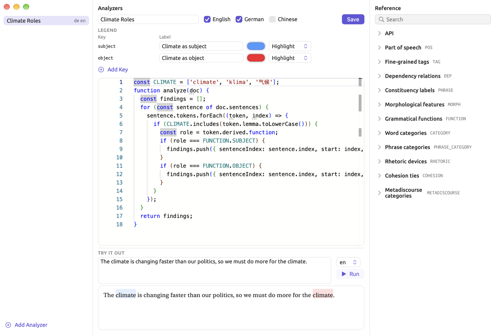
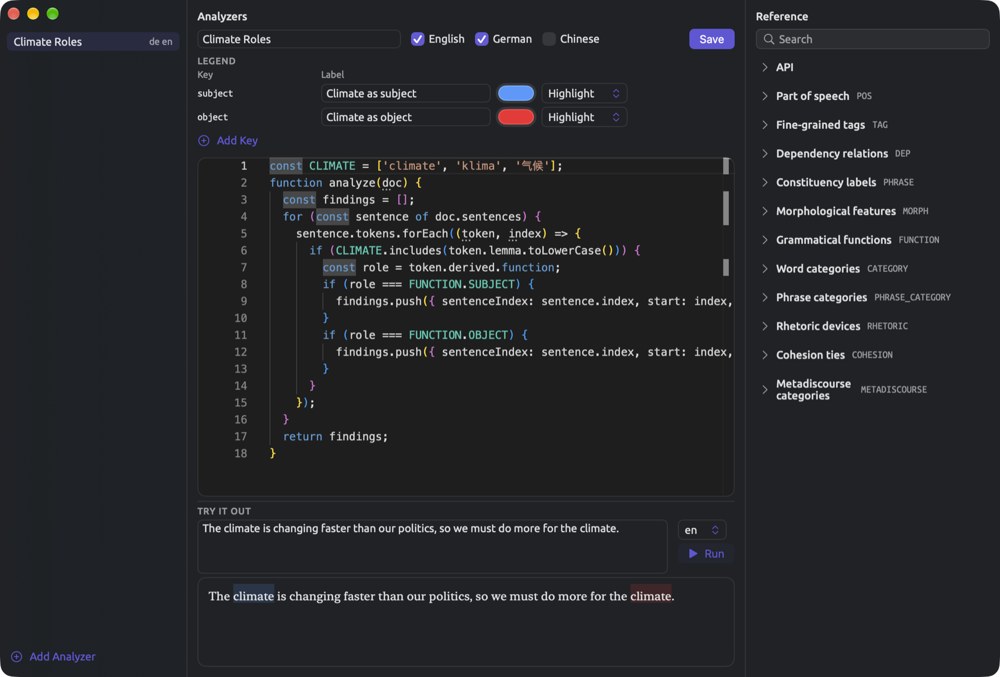
When the window opens, the middle column will show a new, unsaved analyzer whose sample script finds every noun. If you want to modify an existing analyzer, click on it in the list on the left. At first, the Try it out pane consumes minimal vertical space at the bottom of the column, but dragging the divider upwards will increase its size during testing. LemmaLoom saves the height setting for you between launches.
As you write your scripts, the editor numbers the lines, colors the parts of the script, and suggests names. Following POS., the autocompletion popup will contain suggestions for all parts of speech. Likewise, after LL. the popup contains the list of helper functions. The editor will also underline some mistakes that occur while you type. This includes references to undefined constants for instance. To insert a breakpoint into your script, click in the left margin next to the line number of interest (see Breakpoints and stepping later in this chapter).
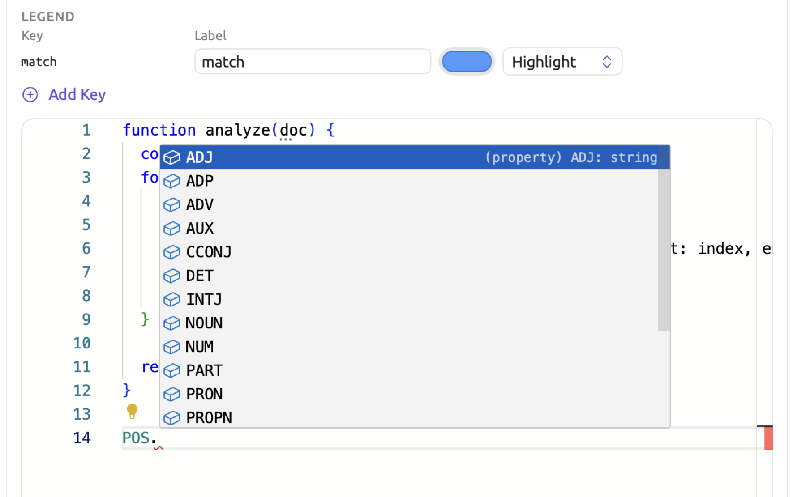
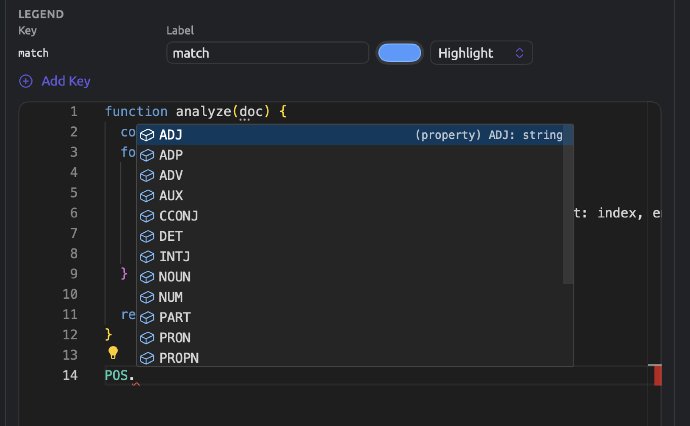
Writing a first analyzer
In the “Climate Roles” analyzer, there are only two keys, subject and object. The key for each climate depends on whether the word acts as the subject or object within a sentence structure. The full script looks like this:
const CLIMATE = ['climate', 'klima', '气候'];
function analyze(doc) {
const findings = [];
for (const sentence of doc.sentences) {
sentence.tokens.forEach((token, index) => {
if (CLIMATE.includes(token.lemma.toLowerCase())) {
const role = token.derived.function;
if (role === FUNCTION.SUBJECT) {
findings.push({ sentenceIndex: sentence.index, start: index, end: index + 1, key: 'subject' });
}
if (role === FUNCTION.OBJECT) {
findings.push({ sentenceIndex: sentence.index, start: index, end: index + 1, key: 'object' });
}
}
});
}
return findings;
}
Most of the documents within “Climate Debate” are written in English, whereas “Running Out of Time (German)” is written in German, so “Climate Roles” runs on both languages. Its legend refers to the two keys as “Climate as subject” and “Climate as object”.
To create an analyzer:
- Choose Window ▸ Analyzers. If the middle column shows an analyzer you have saved, click Add Analyzer below the list.
- Enter a name in Name.
- Select the languages of the documents the analyzer should run on. English is selected at the start.
- Click in the editor, press ⌘A to select the sample script, and type or paste your script in its place.
- Give each key a label in the Legend, where LemmaLoom lists the keys it has found in the script (see Keys and the legend later in this chapter).
- Test the script under Try it out (see Testing with Try it out later in this chapter).
- Click Save.
A good test for “Climate Roles” is one that involves both uses in a single sentence; for instance, The climate is changing faster than our politics, so we must do more for the climate. If you choose en in the language menu next to it, Run highlights the first instance of climate in blue as subject, while highlighting the second instance in red as object.
After saving, the new analyzer gets added to the list, after which LemmaLoom automatically begins to run it on your documents, behind the scenes, in the languages you’ve selected. The analyzer is made available immediately from the lens menu of each document in its languages, and its annotations appear once it has run there.
Reading the script
If you are familiar with JavaScript, move on to The document an analyzer receives below. Please note that lines are referred to according to the editor line numbering when the code has been inserted.
Line 1 (const CLIMATE = …) defines which lemmas count as climate. const assigns a value a name, and square brackets define an array. Climates in English has the lemma climate, whereas German Klimas, like in des Klimas, has the lemma Klima. This array lists these words in English, German, and Chinese. Note that the German word is lowercased, klima, since line 6 lowercases each lemma when trying to match lemmas.
On line 2 (function analyze(doc) {), the function called by LemmaLoom is defined with an argument called doc. This argument represents the document object passed by LemmaLoom. Line 3 (const findings = []) declares an array variable, findings, to hold findings.
In line 4 (for (const sentence of doc.sentences) {), the script iterates over each sentence of the document; for each iteration, it performs the operations in this block. Similarly in line 5 (sentence.tokens.forEach(…)), it iterates over tokens in the current sentence; (token, index) => { … } is an anonymous function; forEach calls it once per iteration with arguments representing the current token and its position in the sentence, starting from 0.
If the condition in line 6 (if (CLIMATE.includes(…)) {) is true, meaning includes finds the token lemma in the CLIMATE list, the statements within the curly braces of this if execute.
Line 7 (const role = token.derived.function;) accesses the grammatical function value of the current token; this is the same value displayed by the Grammatical function lens. Lines 8 (role === FUNCTION.SUBJECT) and 11 (role === FUNCTION.OBJECT) test equality between variables using ===. Equality operators return true if both operands are equal. Here the script checks whether the grammatical function of the token is FUNCTION.SUBJECT or FUNCTION.OBJECT (see Constants later in this chapter).
When true, the script pushes objects representing findings onto the findings array on lines 9 and 12 (findings.push(…)); note that an object is surrounded by braces. Each object includes four properties representing the sentence of origin, the starting index of the passage (start, i.e., the current token’s index), the position just after the passage’s last token (end, here index + 1), and the key. Therefore, each finding corresponds to just one word, whose starting index and ending index will be consecutive.
Lastly, on line 17 (return findings;), the script sends the results back to LemmaLoom.
Object is one broad category of grammatical functions, and it includes the object of prepositions. Therefore, this script will count instances like do more for the climate, as well as protect the climate. The subjects of passive clauses such as the climate is affected by our emissions would fall under the FUNCTION.SUBJECT grammatical function category; thus, they are counted as subjects. Should you wish to count passive subjects with the objects, modify line 7 to const role = token.dep === DEP.NSUBJPASS ? FUNCTION.OBJECT : token.derived.function;. With ? and :, the line chooses between FUNCTION.OBJECT and the token’s own function depending on whether the token is a passive clause subject or otherwise. Keep in mind that this solution applies fully to English alone; the German grammar parser recognizes passive subjects identically to active subjects, and the Chinese parser gives this label to only some subjects of 被 sentences.
The script here could trace any word grammatically; for instance, government or industry. Replace the lemmas in line 1 with the respective lowercase versions of your words.
The document an analyzer receives
The function analyze takes one argument, referred to hereafter as doc. This argument contains three fields:
| Field | What it holds |
|---|---|
doc.language | The language of the analysis, "en", "de", or "zh" |
doc.sentences | The sentences, in order |
doc.builtins | The results of the built-in analyzers Cohesion, Metadiscourse, and Rhetoric |
Analyzers can only return results based on the document’s analysis. If you want to combine the analyzer’s findings with your codings, memos, links, bookmarks, attributes, document properties, or the results of other custom analyzers, you should consider creating a query to do so (see Using the findings later in this chapter).
For very large documents, LemmaLoom indexes documents in segments with a maximum text length of half a megabyte (approximately 80,000 English words). For each segment, LemmaLoom will invoke the analyze function once, and the sentence numbering resets to 0. Documents of ordinary length are indexed as a single segment.
Sentences
Fields contained within entries of doc.sentences include:
| Field | What it holds |
|---|---|
index | The sentence’s number, counting from 0. It is also the sentence’s position in doc.sentences. |
text | The text of the sentence |
tokens | The tokens of the sentence, in order |
root | The position of the sentence’s root token, usually its main verb, or -1 if the sentence has no parse |
constituents | The phrases of the sentence (see Phrases and noun chunks) |
nounChunks | The noun chunks of the sentence |
Tokens
The token numbering starts at 0 within each sentence, and positions in scripts refer to token indices. Tokens consist of either words or punctuation marks. Each token contains these fields:
| Field | What it holds | Example |
|---|---|---|
text | The token as it appears in the text | targets |
whitespace | The spacing that follows the token | " " |
lemma | The dictionary form; in Chinese the same as text | target |
pos | The universal part of speech, with the same codes in every language | NOUN |
tag | The fine-grained tag from the language’s own tag set | NNS |
dep | The dependency relation to the token’s head | nsubjpass |
head | The position of the token’s head; the root points to itself | 4 |
index | The token’s own position in the sentence | 2 |
morph | The morphological features; empty in Chinese | { Number: "Plur" } |
isStop | true for very common words such as the and of | false |
derived | Three categories LemmaLoom works out from the fields above (see the next section) |
Example analyses in the table are based on the sentence The new targets were announced last year. An analysis of this sentence generally follows the form below:
| index | text | lemma | pos | tag | dep | head | derived.function |
|---|---|---|---|---|---|---|---|
| 0 | The | the | DET | DT | det | 2 | adjectival |
| 1 | new | new | ADJ | JJ | amod | 2 | adjectival |
| 2 | targets | target | NOUN | NNS | nsubjpass | 4 | subject |
| 3 | were | be | AUX | VBD | auxpass | 4 | connector |
| 4 | announced | announce | VERB | VBN | ROOT | 4 | mainClause |
| 5 | last | last | ADJ | JJ | amod | 6 | adjectival |
| 6 | year | year | NOUN | NN | npadvmod | 4 | adverbial |
| 7 | . | . | PUNCT | . | punct | 4 | unknown |
Read the head column as arrows pointing from each word to the word it depends on. Targets depends on announced, at position 4, as its passive subject, while the and new depend on targets. Announced is the root word, hence it is its own head, and sentence.root is 4.
Tags and relations vary per language. In English, the tags follow Penn Treebank, and the relation labels are English dependency relations such as nsubj and dobj. In German, the tags follow STTS, whereas relation labels follow TIGER; for example, sb is for a subject while oa is for an accusative object. In Chinese, the tags follow the Chinese Treebank, while relation labels are the English labels plus Chinese ones such as aux:asp and nmod:assmod. The values of the pos field and all derived fields remain identical across the three languages; thus a script testing only these suffices across all languages. The Reference panel lists tags and labels by name (see The Reference panel later in this chapter).
Derived categories
token.derived consists of three categories calculated by LemmaLoom for each token. Each is the category of one lens and means the same in every language.
| Field | Lens | Values |
|---|---|---|
derived.function | Grammatical function | subject, object, predicative, complement, adjectival, adverbial, appositive, agent, conjunct, connector, mainClause, unknown |
derived.posCategory | Word class | noun, verb, adjective, adverb, pronoun, determiner, preposition, conjunction, number, interjection, other |
derived.phraseCategory | Phrase | nounPhrase, verbPhrase, prepPhrase, adjPhrase, advPhrase, conjPhrase, interjection, other, or an empty string |
LemmaLoom uses the token’s dependency relation to infer the function of the token. For several relations, however, the inference takes the token’s head into account. If the head is a noun, pronoun, or numeral, a modifier relation such as advmod counts as adjectival; if not, it counts as adverbial. Relations that are classified with a subtype, indicated by a colon, will count according to their prefix, except obl:agent, which counts as agent. The root is assigned the function mainClause, while unknown refers to any remaining relations, including, say, punctuation.
The phrase category refers to the category of the smallest enclosing phrase excluding clauses. Tokens belonging solely to a clause-level phrase (like the period punctuation mark) will receive an empty string for their phrase category.
Phrases and noun chunks
sentence.constituents gives you an array of the sentence’s phrases according to the phrase structure tree represented visually in the Phrase lens and the sentence diagrams. Phrases contain the starting and ending indices (start and end) of the phrase’s tokens along with an array of the phrase labels, e.g., ['NP'] for a noun phrase. If multiple phrases cover exactly the same tokens, then there will be one object containing the labels in the order they are nested from outside to inside.
sentence.nounChunks gives you the noun chunks of the sentence. Noun chunks refer to nouns preceded by words belonging to them, like the new targets. Noun chunks contain starting and ending indices.
Here’s how the two arrays could look for The new targets were announced last year.
constituents: [
{ start: 0, end: 8, labels: ['S'] },
{ start: 0, end: 3, labels: ['NP'] },
{ start: 3, end: 7, labels: ['VP'] },
{ start: 4, end: 7, labels: ['VP'] },
{ start: 5, end: 7, labels: ['NP'] },
]
nounChunks: [
{ start: 0, end: 3 },
]
S represents a sentence, while VP denotes a verb phrase. Last year is a noun phrase but not a noun chunk. English noun chunks occur exclusively around nouns or pronouns functioning as subjects, objects, or the like in the sentence. Year is actually an adverbial modifier in this instance. Both lists may be empty; e.g., consider a response consisting of a solitary word. Account for such possibilities when implementing your program code.
Results of the built-in analyzers
Your custom analyzer runs on a document last. The three built-in analyzers run first, giving their results in doc.builtins. If you deleted the results from one of the built-in analyzers earlier, those results are still available to your custom analyzer.
| Field | Each entry holds |
|---|---|
doc.builtins.cohesion | One entry per sentence, with sentenceIndex, tie (how the sentence links back to what came before), theme and rheme (the token ranges of the sentence’s opening and of its stress position, each as [start, end]; the field is missing when the sentence has none), and tieWord (the word that makes the tie) |
doc.builtins.metadiscourse | One entry per word the analyzer found, with sentenceIndex, local (the position of the token), and category, such as hedge |
doc.builtins.rhetoric | One entry per device, with device, such as passiveVoice, sentenceIndex, range (the tokens as [start, end]), and note |
tie has seven different values (opening, pronoun, possessive, demonstrative, repetition, zero, and broken). category includes five potential values (hedge, booster, attitude, connective, and engagement); additionally, category in German can contain modalParticle, while in Chinese it can include finalParticle. Lastly, there are thirteen possible values for device ranging from passiveVoice to correlative. All possible values for each field are listed in the Reference panel, along with any lens-defined names. Further information on what each analyzer analyzes can be found in Chapter 6, Lenses.
Helper functions
There are several functions available in LL which handle common operations during scripting.
| Function | What it gives |
|---|---|
LL.isWord(token) | true unless the token is punctuation or a symbol such as $ |
LL.isNominal(pos) | true for NOUN, PROPN, and PRON |
LL.isVerbal(pos) | true for VERB and AUX |
LL.children(sentence, i) | The positions of the tokens whose head is token i |
LL.subtree(sentence, i) | { start, end }, the unbroken span around token i made of it and the tokens that depend on it, directly or through others |
LL.root(sentence) | The position of the sentence’s root, the same as sentence.root |
LL.text(sentence, start, end) | The text of the tokens from start up to end, with their spacing |
console.log(...) | Writes a line under Try it out; lists and objects are written out in full |
In the example sentence, LL.children(sentence, 4) gives back an array [2, 3, 6, 7], the tokens depending upon the word announced. Calling LL.subtree(sentence, 2) provides an object which has two fields { start: 0, end: 3 }, spanning the text The new targets, while calling LL.text(sentence, 0, 3) yields the text "The new targets".
console.log calls are for debugging only; their output is discarded when the analyzer runs on your documents.
Constants
The large majority of fields consist of short codes such as NOUN and nsubjpass. Codes can be specified in quotes as strings, or as named constants; the expression token.pos === POS.NOUN means the same thing as token.pos === 'NOUN'. Named constants should be used whenever possible. Suggestions for named constants will pop up in the editor, and a misspelled constant is underlined. Any quoted string is accepted as-is, regardless of whether the spelling is correct or not. During runtime, an incorrectly spelled constant such as POS.NOUM evaluates to undefined and the script keeps running, so the underline is your only warning.
| Constant | Holds the values of | Example |
|---|---|---|
POS | token.pos | POS.NOUN is 'NOUN' |
TAG | token.tag, in all three languages | TAG.NNS is 'NNS' |
DEP | token.dep, in all three languages | DEP.NSUBJPASS is 'nsubjpass' |
PHRASE | the labels of constituents | PHRASE.NP is 'NP' |
MORPH | the names of the features in token.morph | MORPH.TENSE is 'Tense' |
FUNCTION | token.derived.function | FUNCTION.SUBJECT is 'subject' |
CATEGORY | token.derived.posCategory | CATEGORY.NOUN is 'noun' |
PHRASE_CATEGORY | token.derived.phraseCategory | PHRASE_CATEGORY.NOUN_PHRASE is 'nounPhrase' |
COHESION | tie in doc.builtins.cohesion | COHESION.REPETITION is 'repetition' |
METADISCOURSE | category in doc.builtins.metadiscourse | METADISCOURSE.HEDGE is 'hedge' |
RHETORIC | device in doc.builtins.rhetoric | RHETORIC.PASSIVE_VOICE is 'passiveVoice' |
KEY | the keys in this analyzer’s legend | KEY.SUBJECT is 'subject' |
Constant names in LemmaLoom consist of the codes in uppercase. When there is an occurrence of lowercase characters being followed directly by uppercase characters in a code, put an underscore in between; for instance, nounPhrase is written as NOUN_PHRASE and mainClause as MAIN_CLAUSE. All non-letter symbols that cannot be part of names, like colons, are replaced by underscores.
MORPH constants serve as names for the feature codes. Write your feature values as strings; examples include token.morph[MORPH.TENSE] === 'Past' or simply token.morph.Tense === 'Past'.
Constant names apply to most codes, but four cases differ:
DEP.ROOTholds'root'; however, the root is labeled asROOTin analyses. Determine whether a token is the root by comparing indices, likeindex === sentence.root, or using'ROOT'.- Ten common features are listed under the
MORPHconstant as Tense, Number, Person, Mood, VerbForm, Case, Degree, Aspect, Gender, and PronType. Use the string representation of any feature not included in theMORPHconstant directly, as intoken.morph.Definite === 'Def'. - Phrase labels that occur exclusively in Chinese, such as
IP,DNP, andLCP, need quotation marks around their names. - Any tag composed of purely punctuation, such as the English period (
.) and comma (,) or the German$,, requires quotation marks too.
Avoid assigning names that already belong to constants or to LL or console. When running scripts that define their own const KEY, the processing stops due to errors.
The Reference panel
The Reference panel to the right side of the window lists the parts of the document object, the helper functions, and the constants. Under API are listed doc.language, doc.sentences[i].tokens[j], all three lists in doc.builtins, along with the helper functions. Every component’s value type will be provided after its declaration, e.g., String, Bool. All fields of the sentence, token, and finding objects may be viewed in tables within this chapter. All sections below API contain constants listed with their names written in plain English:
- Part of speech (
POS), Fine-grained tags (TAG), Dependency relations (DEP), Constituency labels (PHRASE), and Morphological features (MORPH); - Grammatical functions (
FUNCTION), Word categories (CATEGORY), and Phrase categories (PHRASE_CATEGORY); - Rhetoric devices (
RHETORIC), Cohesion ties (COHESION), and Metadiscourse categories (METADISCOURSE).
All sections above are collapsed by default. Clicking a section header expands/collapses the relevant section accordingly. Find a particular item by typing a substring of it into Search. Constant lookup considers its name, code, or common English name. Lookup for an API entry will search for the literal string of the API declaration. The panel displays a combined listing of all matching items from all sections, or No matches. Click any item to insert it at the location of the caret within the editor panel.
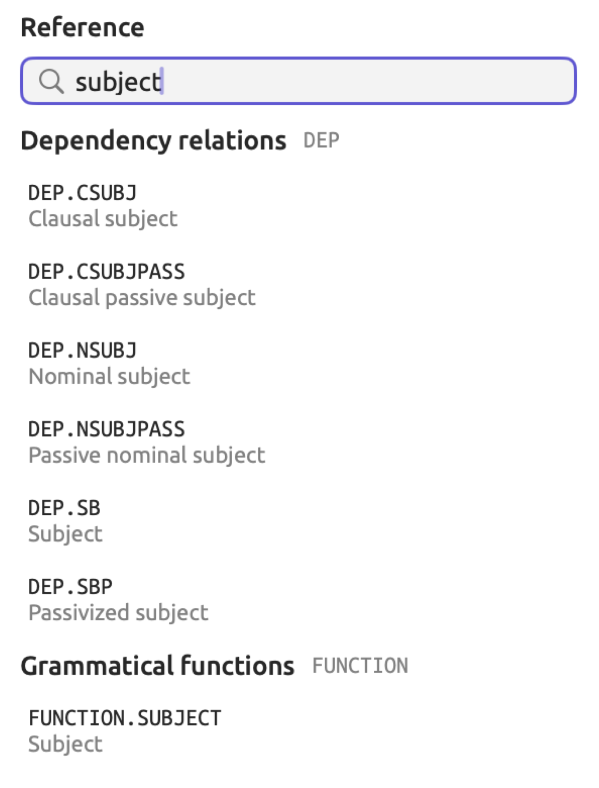
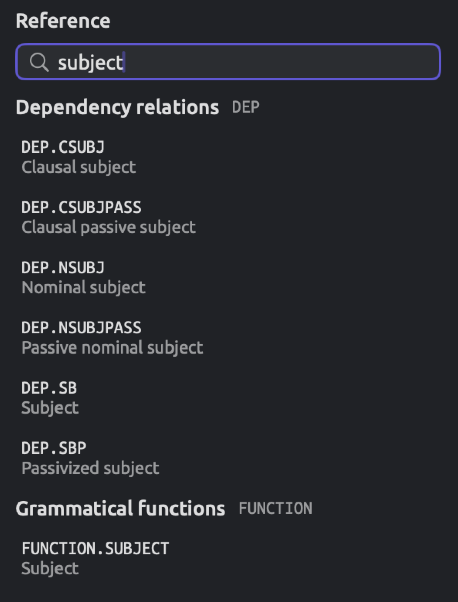
Findings and the legend
Findings
analyze must return a list where each element is a finding consisting of the following fields:
| Field | What it holds |
|---|---|
sentenceIndex | The index of the sentence |
start | The position of the first token of the passage |
end | The position just after the last token |
key | One of the keys in the legend |
note | A short text of your own; optional |
With respect to the example The new targets were announced, the first token is at position 0 while the last is at position 4, giving the finding start: 0 and end: 5. The number of tokens, therefore, always equals end - start, here 5.
A finding must occur in one sentence alone. Overlapping is possible for findings and, consequently, one token may carry several keys; the reader then renders all their styles on it.
Note fields are intended for use in queries. You could test them in a query using the field Note (see Using the findings later in this chapter).
Keys and the legend
There must be a corresponding row in the legend for every key that your findings use. The Legend pane above the editor displays the row for each key, with the following parts:
- Key contains your key in script form.
- Label contains the name that will display in the legend of the lens, and is used for the purpose of querying. Labels are initially set as the key name itself.
- The color well specifies the color used for your key’s findings. New keys take their colors in turn from a pool of eight.
- The style menu defines the rendering method used by the reader. This includes the options Highlight, Underline, Text color, or Bold. Initially, newly added keys have Highlight selected.
Legend rows are generated for all keys written out in quotes (key: '...') in your script in order of appearance while you write your script. When you remove a key from your script, the respective row is deleted from your legend. If you modify your keys’ names, then that particular row gets deleted, and replaced by a new row containing the modified key as its label and the default color. You should therefore assign colors and labels after deciding on key names.
You may update any row, including its label, color, and style, whenever you wish. After you save, changes made to legend rows show in every document where the lens is enabled.
Keys the script computes
A key may also be generated from the analysis itself. If you replace both if statements of the analyzer “Climate Roles”, along with the push lines inside them, with the line below, the grammatical function becomes the key:
findings.push({ sentenceIndex: sentence.index, start: index, end: index + 1, key: token.derived.function });
A climate that acts as a subject receives the key subject, a climate that is an object receives object, the first part of climate policy becomes adjectival, and so forth for each of the twelve values listed under Derived categories earlier in this chapter.
These keys reach the legend via a test run. Upon clicking Save, LemmaLoom executes the script using a sample three-word sentence (Cats sleep soundly in English). Keys produced during this process will be automatically added. These rows keep their labels and colors; a key the script no longer produces is removed at the next save.
Keys that the test run does not produce, as in this example, are added by hand:
- Click Add Key below the legend.
- Enter the key in the new row’s Key field, exactly as the script produces it (such as
adjectival). - Fill in Label, the color, and the style.
Rows that you add will have a minus button at the end of the row that lets you remove the row; the row persists in the legend regardless of what your script contains. At save time, LemmaLoom excludes any row whose Key is blank, and of two rows with the same key, it keeps only the first.
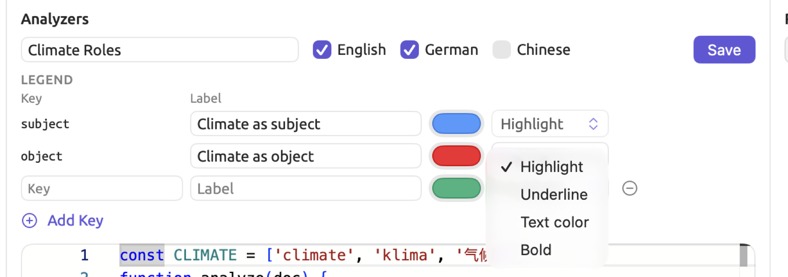
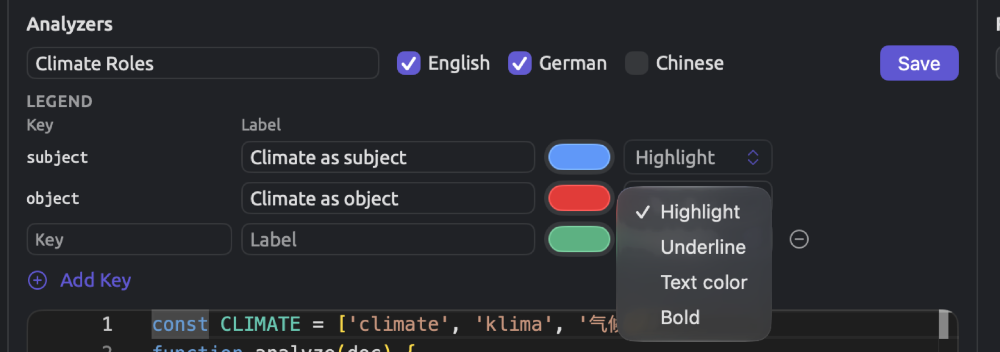
If there exists a key inside your legend, then KEY has a constant for it. When your key subject is listed in your legend, you can write key: KEY.SUBJECT. If you write your key only as a KEY constant, then it needs to be added using Add Key. Any key beginning with a number like 1st or containing letters beyond a to z like über or 主语 should be enclosed in quotation marks.
Supported languages
There are checkboxes next to English, German, and Chinese to select which documents to run the analyzer on. These three languages are the ones LemmaLoom indexes. Only a document in a selected language will show an available option for the analyzer in the lens menu and display it as part of Document Properties. You must choose at least one language.
Make sure your script is compatible with the chosen languages. “Climate Roles” is compatible with all three languages, although “Climate Debate” needs only English and German. Its list contains English, German, and Chinese lemmas, and it checks token.derived.function, which has identical values across all languages. Scripts that check token.tag or token.dep work only for the language of their labels. Multiple languages may be handled within one script with doc.language:
let subjectLabel = 'nsubj';
if (doc.language === 'de') {
subjectLabel = 'sb';
}
Even with derived fields taken into account, the analysis of each language will differ in specifics. Therefore, you should test each language you choose. In the case of English, do more for the climate results in a finding because the analysis will regard climate as the object of the preposition for. In German, on the other hand, the noun within the prepositional phrase für das Klima is usually labeled nk (part of a noun phrase) and thus counts as adjectival, resulting in a sentence with no finding.
In order to test another language, choose it from the dropdown language menu provided under Try it out, then provide a sentence written in the language. Only those languages chosen by you will be selectable via menu; the menu lists them by their codes, en for English, de for German, and zh for Chinese.
Upon saving, LemmaLoom deletes the analyzer’s findings from documents in deselected languages, while running the analyzer on newly selected languages’ documents.
Testing with Try it out
Try it out executes the script currently in the editor on the text you enter, regardless of whether the script has been saved or not. Use Try it out frequently during writing, and include sentences that differ structurally from your initial example, since the analyzer must account for each sentence structure within your documents.
- Enter one or more sentences in the box under Try it out.
- Choose the language of the text in the menu beside the box.
- Click Run.
LemmaLoom performs the grammar analysis of your text using the same methods as for documents, then runs the built-in analyzers and then your script. Below the box, your text will appear along with annotations of the findings in the colors and styles specified in the legend. It might initially take a few seconds to prepare the grammar analysis for a particular language before performing your first run on it. Run is disabled while the box is empty (No text entered), and during a run the spinner icon replaces the button.
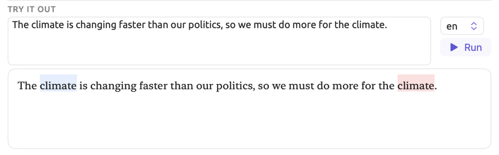
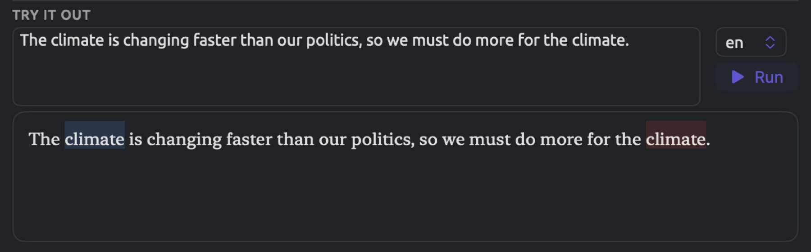
Below the annotated text, there is a small console which displays everything the script has printed with console.log, one line per call, with every line preceded by ›. If there is nothing found by the script, the console will display 0 findings. If you would like to know the interpretation of the analysis on a particular sentence, you may print the values. This line, placed inside the loop over sentences, prints each token with its relation:
console.log(sentence.tokens.map((token) => token.text + '/' + token.dep));
For The new targets were announced last year. it generates ["The/det","new/amod","targets/nsubjpass","were/auxpass","announced/ROOT","last/amod","year/npadvmod","./punct"].
The test text is kept inside the box while the window is open, regardless of switching analyzers, allowing you to run multiple analyzers on the same text.
When errors occur
Should the execution fail, LemmaLoom will halt execution of your script, display an error message in red under the editor, and underline the faulty line in the editor when the error belongs to a particular line. For any errors in your findings, the editor underlines line 1.
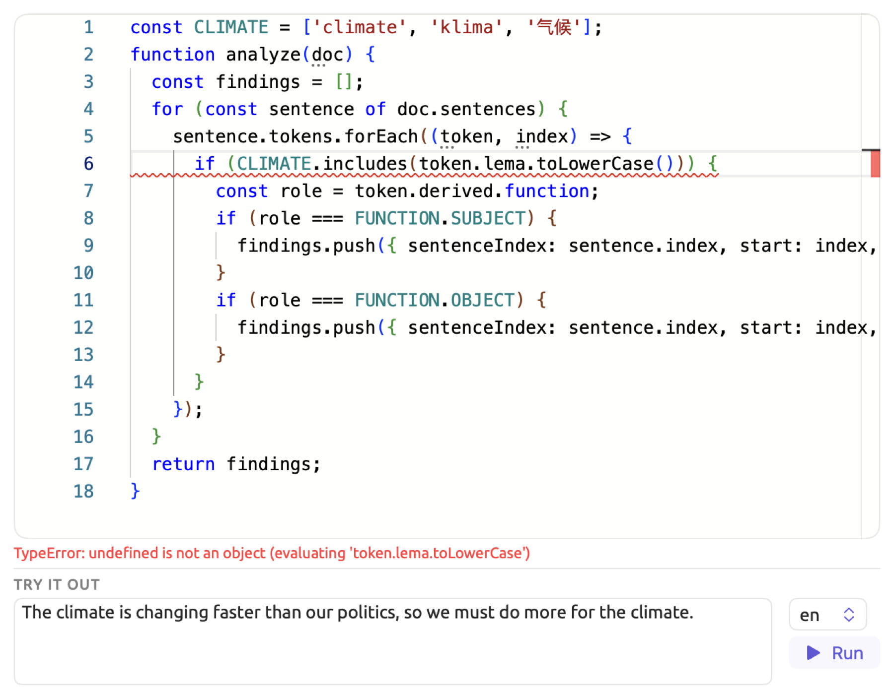
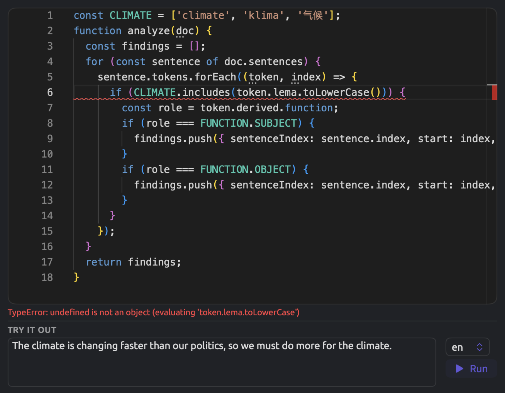
| Message | What it means |
|---|---|
| The script must define a function named analyze(doc). | There is no function called analyze, perhaps because its name is misspelled. |
| analyze(doc) must return an array of findings. | The function returns nothing, or something other than a list. Check the return line. |
| Finding 3 must have sentenceIndex, start, end, and key. | A finding lacks one of the four fields, one of their names is misspelled, or a value has the wrong kind (a position that is not a number, or a key that is not text). A misspelled constant such as KEY.SUBJCT has no value, so it causes this message too. Findings are counted from 0, so this is the fourth. |
| Finding 3: sentenceIndex 12 is out of range. | No sentence has that number. |
| Finding 3: token range 4..4 is out of range for sentence 0. | end is not larger than start, start is below 0, or end lies beyond the end of the sentence. |
| Finding 3: key “objekt” is not in the legend. | The key has no row in the legend. Correct the script, or add the key with Add Key. |
| A message beginning with TypeError, ReferenceError, or SyntaxError | A mistake in the JavaScript itself. The editor underlines the line. |
A TypeError often indicates that a field is incorrectly spelled. Suppose your script had token.lema.toLowerCase() instead of token.lemma.toLowerCase() at line 6 of “Climate Roles”. This mistake would halt execution with a TypeError at line 6 because token.lema doesn’t exist, and therefore cannot be turned into lowercase.
A script stuck in an infinite loop continues executing infinitely. Under Try it out, the spinning circle replaces Run indefinitely. Even the Save button executes the script, thus possibly creating an identical problem. You will need to select the entire script with ⌘A and copy it with ⌘C, since quitting loses your unsaved progress. Then quit LemmaLoom itself (⌘Q), reopen it, and paste your script back in. Typically, scripts that suffer from infinite looping contain a while loop whose condition never evaluates to false. If the script has a loop other than a for … of or forEach over a list, test it on a short text before you save.
Breakpoints and stepping
If your annotated text does not meet expectations, you may halt execution in the middle of a test run and examine the current state of the script’s variables.
- Click in the margin to the left of a line number in the editor, or on the number itself. A red dot shows that the line has a breakpoint. Click again to remove it.
- Click Run under Try it out.
The execution of the script pauses just before reaching the line marked by the breakpoint. Highlighting occurs on that line, and a box under the test text shows its line number, such as ● L7, along with the current values of the script’s variables. Additionally, hovering the mouse pointer over one of these variables in the script editor displays its value.
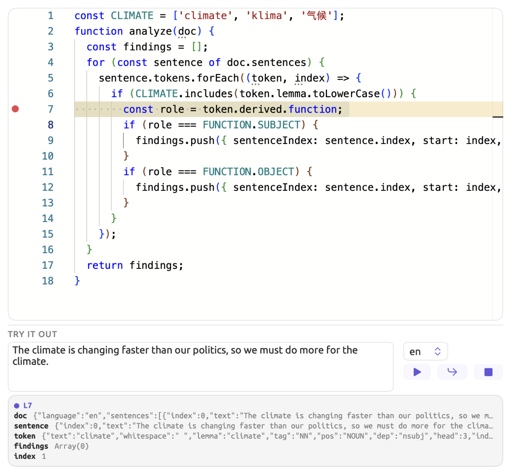
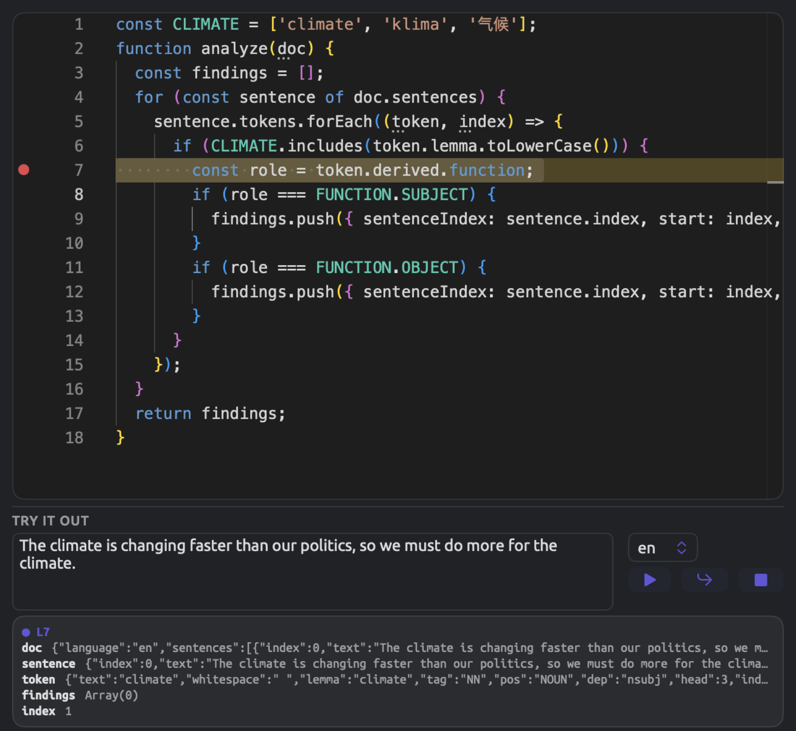
There are three buttons taking the place of Run:
- The play button advances past the breakpoint to the next breakpoint or the end of the run.
- The bent arrow advances to the next line beginning a statement. This includes advancing into any loop statements as well as functions passed to
forEach. Running through steps of “Climate Roles” thus advances past each token sequentially. - The square ends the run prematurely.
Variables displayed by LemmaLoom are limited to doc, sentence, token, findings, finding, marker, span, clause, i, and index, and they appear only if they currently exist in the script. These names are used in examples throughout this chapter wherever possible. Other variables, such as role in “Climate Roles”, may be logged using console.log. Long values are truncated; lists appear as their lengths (Array(3)), texts are cut after their first 80 characters, and objects after 120 characters.
Given “Climate Roles” along with the example test sentence introduced earlier in the chapter, breaking on line 7 (const role = …) pauses execution at the first climate, where index is equal to 1 and findings is equal to Array(0). Clicking the play button pauses execution at the second climate, where index equals 16 and findings equals Array(1), since the finding for the first climate has been added in between.
A breakpoint pauses a script only on a line beginning a statement. Thus a breakpoint on lines of closing braces and parentheses like } or }); in “Climate Roles”, on lines beginning with else, or on a continuation of a previous statement is skipped. In a select number of layouts, LemmaLoom can follow the script only from breakpoint to breakpoint, and in a few it executes scripts completely without stopping on any breakpoints. Breakpoints are limited to Try it out.
Saving, changing, and deleting
Saving an analyzer
To save the analyzer, either press Save at the top of the middle column, or hit Return when editing Name or a Label field. Save is disabled while Name is empty (Name is empty) or while no language is selected (No language chosen).
Before saving the analyzer, LemmaLoom verifies its script. LemmaLoom extracts the legend keys first before running your script on a sample three-word sentence in each selected language (Cats sleep soundly, Katzen schlafen gern, and 猫 喜欢 睡觉). Because these sample sentences generate blank results for phrases, noun chunks, morphological features, and built-in results, verifying your script also detects any problems arising when processing empty lists. Should there be issues in your script, LemmaLoom informs you below the script editor (see When errors occur earlier in this chapter). Another pair of messages displays only when you save. The script is empty. means that there is no script written in the editor, while No keys found in the script. indicates that the legend table is blank.
LemmaLoom applies the verified script across all your documents in the selected languages next. Progress rings show in the navigation sidebar and in Window ▸ Activity (⌥⌘0). The time this operation takes will depend on how many documents you have and the power of your Mac.
Changing an analyzer
Select an analyzer in the list, update it, and click Save. Depending on the nature of your update, different outcomes may occur:
- If the update consisted of changing its name, label, color, or style, then the change will be reflected immediately wherever its lens is enabled.
- In the event of updating the analyzer script itself, updating the language or set of languages it uses, or the keys it uses for analysis, LemmaLoom will rerun the entire analyzer process again for all documents in its designated languages, including any language you have just selected. Until it has processed the document in question, the analyzer’s row in that document’s Document Properties displays Out of Date.
Creating an analyzer, updating it, and deletion are all entries in the undo history of the Analyzers window. While the Analyzers window is active, the operation Edit ▸ Undo Edit Analyzer, for instance, rolls back to the previous version of the analyzer. The middle column keeps showing what you saved until you select the analyzer from the list again. Saving prior to selection re-saves the newer version of the analyzer. More detail regarding undo in particular windows can be found in Which window a step belongs to in Chapter 23, Undo and Redo.
Deleting an analyzer
To delete an analyzer, right-click the analyzer in the list and choose Delete Analyzer. Alternatively, you can select the analyzer first and then choose Edit ▸ Delete Analyzer (⌘⌫). This shortcut function applies while the list has focus, as would happen upon selecting an analyzer. LemmaLoom immediately deletes the analyzer.
Analyzers are shared across all projects, meaning deletion causes immediate removal across all projects. Its lens gets disabled for all currently open documents, and LemmaLoom removes its findings from all documents. Edit ▸ Undo Delete Analyzer (⌘Z) restores it and runs it again. Should you merely want an analyzer out of particular documents, disable the analyzer for those documents (described in Analyzers for each document later on in this chapter).
When analyzers are executed
A custom analyzer is executed on your documents at the end of indexing, after the grammar analysis of each document and the three built-in analyzers. Each custom analyzer for the document’s language will be executed sequentially as long as it is enabled for the document. Its findings are saved alongside the document itself and accessed through the lens, Auto Code…, and queries.
Your analyzers are executed on your document:
- upon initial indexing, once imported into the project or via Index Now;
- upon subsequent indexing, for example following changes made to the document’s text or language setting;
- upon saving a new analyzer, or a modification to the analyzer script, selected languages, or keys;
- via Run in the document’s Document Properties.
Should modifications be made to an existing analyzer, LemmaLoom generally uses the previously performed grammar analysis on your documents and executes only the analyzers again without redoing everything from scratch. Nonetheless, an analyzer still processes every document within its assigned languages. If the script is inefficiently written, it causes a bottleneck in processing all the documents. Worse yet, should the script become trapped in an infinite loop, it keeps running indefinitely until you quit LemmaLoom. Should that happen, correct or delete the offending analyzer via Window ▸ Analyzers before quitting and reopening LemmaLoom.
It is possible that an error occurs while executing the script on a specific document. Perhaps the document contains some particular combination of words or syntax not included in test sentences during development of the script. LemmaLoom discards the analyzer’s findings for the document and flags the analyzer in Document Properties as Not Run or Out of Date. From there, you may click Run in order to retry. If the problem persists and causes failure of the analyzer script again, LemmaLoom marks it as Failed in Document Properties, displaying the error message upon hover. To debug the exact problem, place suspicious sentences into Try it out and run the script there.
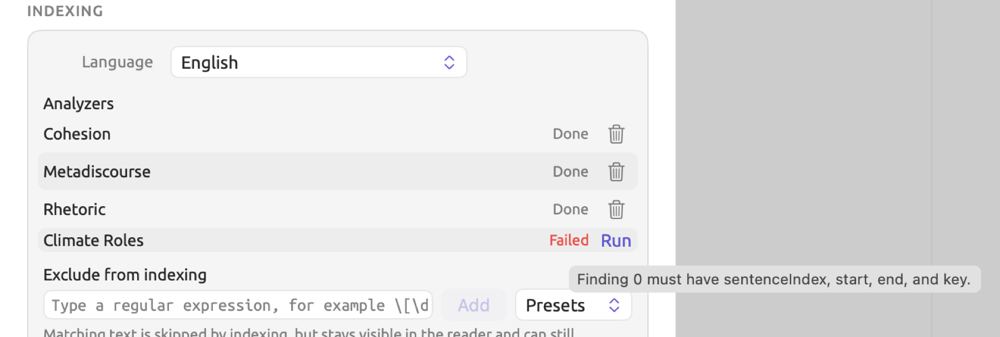
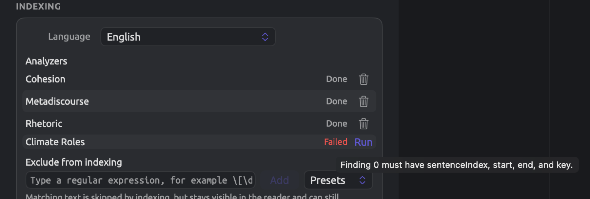
Analyzers for each document
Analyzers run on each document within its supported languages unless disabled for a document. You can disable an analyzer that does not suit a document when you import the document or at any time thereafter. How to select analyzers for a document is covered under Choosing analyzers for a document in Chapter 21, Analysis and Indexing.
When you import a document, in the Import Document dialog (or Import from Web for web pages), you have access to the Analyzers list, which shows the built-in analyzers first and yours after them in alphabetical order. Each entry in the list has a checkbox that you can deselect to prevent that particular analyzer from being executed on the document. When Language is set to Automatic, all analyzers will appear, whereas when a specific language is selected, then only those for that particular language appear. Additionally, the list becomes disabled whenever Index for grammar analysis is deselected. Further details are available under Analyzers and indexing in Chapter 4, Importing Material.
On a document currently in your project, the Analyzers list appears in Document Properties:
- Right-click the document in the sidebar and choose Properties.
- In the Indexing section, find the Analyzers list.
Every analyzer available for the document’s language receives its own row indicating whether it is Done, Out of Date, Not Run, Running, or Failed.
- To remove an analyzer’s findings from a document so it stops running on it, you press its trash button, Remove Output. This button appears once the analyzer has run on the document.
- To execute an analyzer that is Not Run, Out of Date, or removed from a document, you click Run; this action will also enable a removed analyzer on the document again.
Run is disabled while either the document has not yet been indexed (Not indexed yet), or indexing has been turned off for the document (Indexing is off). Removal and execution both occur immediately.
Both removal of an analyzer and execution of a removed one are actions that appear in the main window’s undo history, and Edit ▸ Undo Remove Output restores and runs the analyzer again.
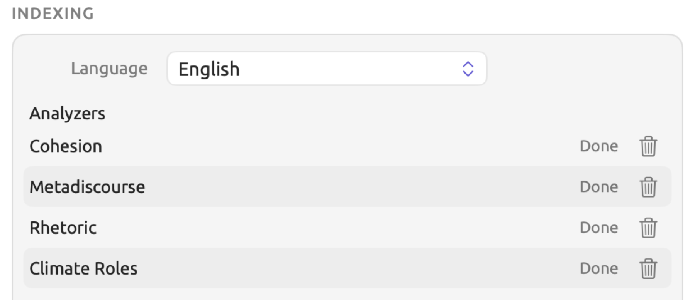
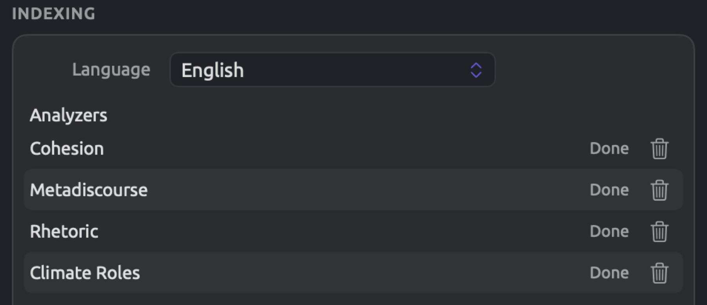
When you remove an analyzer from a document, it no longer appears in the lens menu of the document, and Auto Code… and queries involving it skip the document. If you ever modify an analyzer that has been disabled on a document, it stays disabled there, so the new version runs only on the documents where it is enabled.
Using the findings
In the reader
Analyzers can be toggled individually through the lens menu to view annotations of their findings directly in the reader. To activate an individual analyzer’s annotations, open the lens menu located at the right of the title band; here, your analyzers are grouped together. The lens displays annotations, while its legend displays label names. Clear Analyzers disables all analyzer lenses immediately. Learn more about toggling specific keys and viewing only annotated sentences via Show only the sentences a lens annotates in Analyzer lenses in Chapter 6, Lenses.
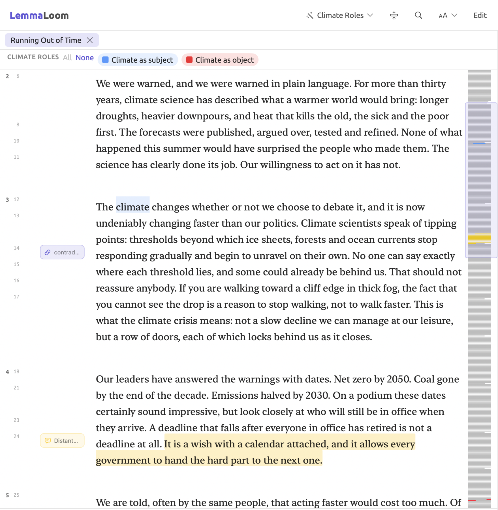
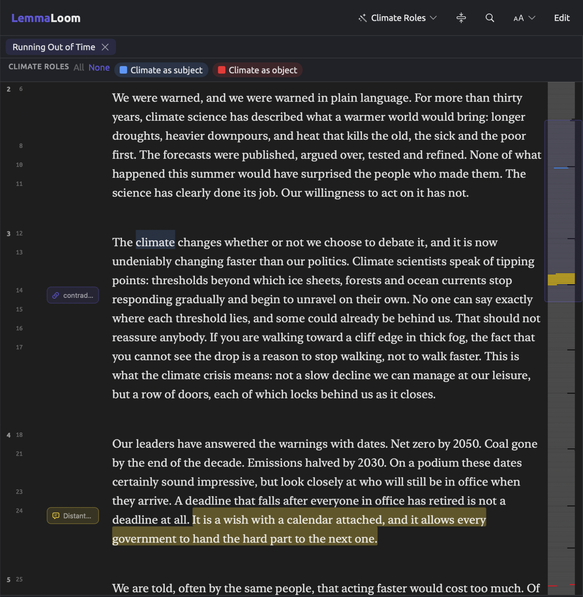
Coding the findings
Enabling the analyzer’s lens gives you access to the Document ▸ Auto Code… (⇧⌘A) function, which performs coding on whatever findings were made using the analyzer. This could be done on the currently open document, a document set, or even an entire project. Each key in the findings becomes a row in the Auto Code dialog. Named after its respective label, each of these can either be sent to an already established code (e.g., the row “Climate as object” to “Responsibility” in “Climate Debate”) or turned into new codes (e.g., two new codes from the two rows of “Climate Roles”). In a set or project, LemmaLoom does the same to all documents within it that use the same languages as the analyzer, have been indexed, and have the analyzer enabled. Please note that every mistake of the grammar analysis becomes a coding too. For more information on the dialog, see Chapter 7, Coding.
In queries
A query that finds Analysis · Findings searches what has been discovered by the analyzers, the ones included with LemmaLoom and any custom ones you may have made. There are three fields that relate specifically to findings. Analyzer checks which analyzer discovered the finding, Finding tests the key under which the finding was recorded (listed under its label), and Note checks the note associated with the finding. Other tests available in queries also apply, including the codes for any finding, and any attributes that belong to its associated document. Queries on Library · Analyzers list the analyzers themselves and can check their Name, Languages, and Legend Keys (see Choosing what to find in Chapter 15, Building a Query).
In “Climate Debate”, each document has an attribute titled “Stance”, taking values of either “Activist”, “Skeptic”, or “Neutral”. As a result, counting the findings from the “Climate Roles” analyzer by both key and “Stance” should reveal any differences between how activists and skeptics represent the topic of climate. When working with your materials, group by whichever attribute divides your documents.
To query for the counts of an analyzer’s findings by group:
- Open the Queries section of the project.
- In Find, choose Analysis · Findings.
- In the Where condition, click Add and choose Add Rule.
- In the new rule’s field menu, choose Analyzer from the Finding section.
- Leave the comparison at is any of, and choose the analyzer as the rule’s value.
- In Show, choose Count.
- Click Group By and choose Finding in the new row’s field menu.
- Click Group By again and choose the attribute in the second row’s field menu, such as Attribute ▸ Stance.
- In the menu showing Hits, choose Per 10,000 Words.
For “Climate Roles” in “Climate Debate”, you end up with a table showing the subjects and objects for each value of “Stance”. Each group contains a different amount of text; therefore, what you end up with is actually a table of rates. Rate refers to how many findings occur in each group per 10,000 words of text contained within the documents in the group (see Measures in Chapter 16, Query Results and Statistics). For instance, assuming there were 4,000 words and 3 occurrences of “Climate as object” in the activists’ documents (using round numbers purely as examples), the rate will be .
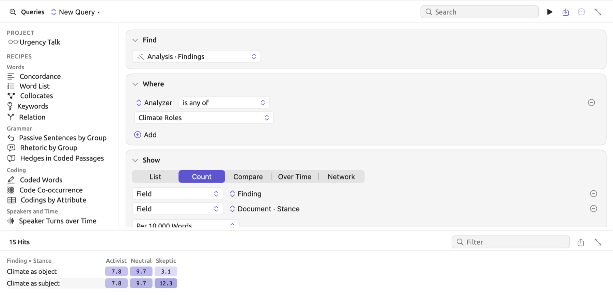
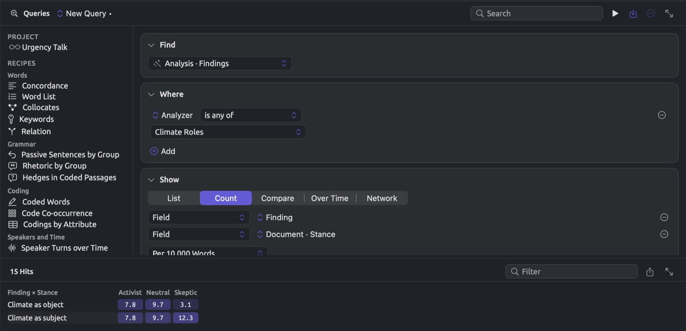
As described in Comparing groups in Chapter 16, Query Results and Statistics, if you want to test the groups for significant differences, choose Compare in Show, then delete the Finding row from Group By so that only “Stance” remains, and finally add a rule Finding is any of “Climate as object”. The three neutral documents, “Heat Wave Report 2024”, “Carbon Tax Debate”, and “Radio Debate”, participate in the comparison as their own group.
In archives
A LemmaLoom archive (.llz) includes the analyzers whose findings are stored alongside the documents contained within the archive, together with the findings. An archive also includes any analyzers that the saved queries of the archive use or were turned into. On importing an archive, an unrelated analyzer having the same name as an existing analyzer in your library is imported next to it. Please refer to Chapter 22, Exchanging and Exporting for further guidance.
Analyzers made from queries
Choose Save as Analyzer… from a query’s Save menu to save it as an analyzer. The query must find words, pattern matches, sentences, phrases, or noun chunks and test only their words and grammar; otherwise it cannot be transformed into an analyzer. Your newly made analyzer will show up in Window ▸ Analyzers among the others available; hence, like other analyzers, you can view its script, test-run it using Try it out, and modify it directly. The keys used in generating the analyzer will either consist of the categories from your query, or just one key, hit, labeled Match, in case there are no categories to speak of. These will appear as legend rows with a Key field, as well as a minus button, similar to what happens when you use Add Key.
The analyzer you have just generated is linked back to the saved query it was derived from. If the latter is resaved with updates, a label of Out of Date will appear next to the analyzer name in your list. Updating it is done as follows:
- Click the analyzer in the list.
- Click Update Analyzer, to the left of Save.
When LemmaLoom writes a new script from the saved query, it preserves the analyzer’s name and languages but replaces its script and legend, meaning any changes to the labels, colors, and styles of the analyzer would be overwritten by the newly generated analyzer. The check that the new script finds what the query finds runs only with Save as Analyzer…. Should the newly written script have errors, they are shown underneath the editor. Should the current state of the saved query be unable to transform into an analyzer, then Update Analyzer is disabled with the appropriate explanation why it cannot be done; Edit ▸ Undo Update Analyzer will restore the previous state of the analyzer before updating.
The link between the saved query and the analyzer becomes broken upon editing and saving the script. The analyzer then counts as one of your own. Changing only the name, languages, or legend keeps the connection. See Keeping an analyzer in step with its query in Chapter 18, Using Query Results for more ways to handle query-generated analyzers.